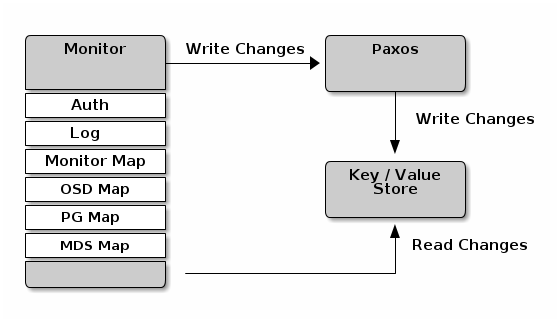
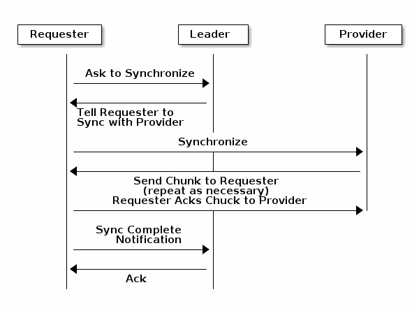

Monitor
MON节点在cluster中的定位在总体架构中已有阐述，这章主要描述MON内部架构和相关配置。
mon提供的服务有:
- 维持一份cluster map 的副本，并负责提供此副本给client
- 记录日志
- 认证
当cluster map的改变(挂了一个osd)被当前mon检测到时，mon就会把changes写入同一个Paxos实例中，然后由Paxos将Changes写入kv store来保证强一致性。

Quorum
Cluster Map
Consistency
- mon通过monitor map(monmap)来发现其他monitor node，目的是为了时时通过paxos动态更新monmap，而其他daemon则通过config file来寻找Mon节点
- monmap的修改必须通过分布式算法Paxos以确保quorum中保有相同版本的monmap
初始配置
＃ 等效于分别配置三个mon的网络参数
[mon]
mon host = hostname1,hostname2,hostname3
mon addr = 10.0.0.10:6789,10.0.0.11:6789,10.0.0.12:6789
mon initial member = a,b,c
[mon.a]
host = hostname1
mon addr = 10.0.0.10:6789
- mon initial member: 指定初始化quorum的mon，用来快速建立集群
- mon host和mon addr用来指定monitor节点主机名和地址
data
mon的data需要通过leveldb存储数据到本地文件系统中，由于mon需要频繁的把内存中的monmap刷入硬盘，可能会影响osd的效率，因此最好不要将mon部署到osd节点上。
0.58以前旧版本的mon将直接通过文件系统存储data，新版本为了保证data ACID(原子性/一致性/隔离性/持续性)，通过kv store(leveldb)来存储data。
- mon配置中有一大堆mon warn on <condition>开头的，是用来在条件符合时报出HEALTH_WARN的，default都是True，不需要更改
- mon health to clog 系列setting是定时向cluter的Log中写入cluster的健康状态，如果有定制化监控需求，可以通过修改mon health to clog interval来自定义监控间隔
- mon data: 指定mon data文件存放位置，一般除非默认文件夹有权限问题，否则不需要修改
mon data = /var/lib/ceph/mon/$cluster-$id
存储容量
[global]
mon osd full ratio = .80
mon osd backfillfull ratio = .75
mon osd nearfull ratio = .70
- mon osd full ratio: 当一个OSD的使用空间大于0.8时，就被认为太满了，为了保证数据不丢失，就会不再允许客户端的读写，直到加入新的osd使得集群压力变小后
- mon osd backfillfull ratio: 当使用空间大于这个值时，认为too full to backfill
- 如果一些osd已经快满了(nearful)，而另一些还有足够空间，说明Weight设置有问题
MON存储的同步
http://docs.ceph.com/docs/master/rados/configuration/mon-config-ref/#monitor-store-synchronization
可以将mon分为三个角色，同步的过程如下图:
- Leader: 因为第一个拥有最新版本的cluster map，因此在quorum中被选举为Leader
- Provider: 拥有最新版cluster map的mon节点
- Requester: 刚加入的mon(刚从fail中重启等原因)
如果同步过程中Provider收到map 的update请求，则会中断传输。
其他配置
另外的都是超时时间等设置，一般默认值就行
# 集群中最大osd的数量
mon max osd = 10000